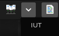
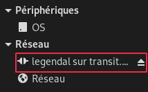
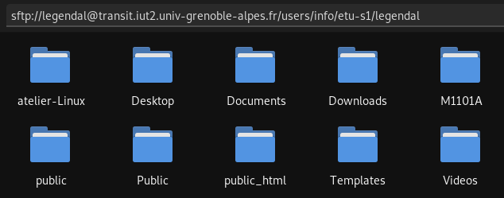

1. Transfert de fichiers
1.1 FileZilla
Fenêtre de création d'un "site"
La solution la plus simple pour échanger des fichiers avec l'IUT est d'utiliser un utilitaire FTP, par exemple : Filezilla, disponible sur toutes les plateformes.
Vous pouvez ajouter transit dans vos "Sites" en allant dans Fichier > Gestionnaire de sites > Nouveau Site
Les informations nécessaires sont :
- Protocole :
- SFTP
- Hôte :
- transit.iut2.univ-grenoble-alpes.fr
- Identifiant :
- Votre nom de login à l'IUT
Une fois ajouté vous pouvez vous connecter en sélectionnant votre nouveau site en haut à gauche : 
1.2 Gestionnaire de fichiers
Fenêtre de connexion à un serveur
Vous pouvez également accédez à vos fichiers de l'IUT via un gestionnaire de fichiers. Pour la plupart de ces derniers, la méthode est semblable mais ici, Nemo sera celui qui servira d'exemple.
Allez dans Fichier > Se connecter à un serveur… puis, de la même manière que pour FileZilla remplissez les champs nécessaires à la connexion en ajoutant le dossier distant, dans notre cas : /users/info/etu-s1/nomdelogin
Une fois connecté, un nouvel emplacement apparaîtra, à partir duquel vous pourrez gérer vos fichiers comme si vous étiez en local :  